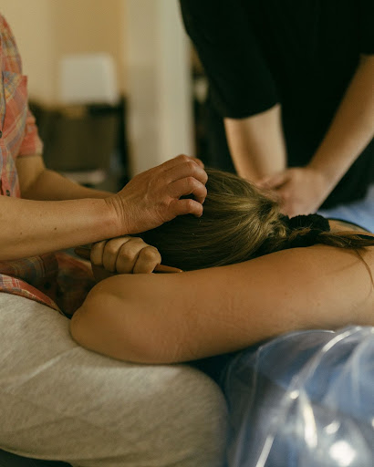
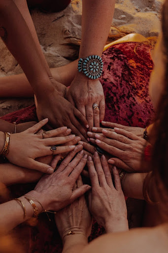

Cursos de Especialización
En Almatriz entendemos que el aprendizaje no termina con una certificación. Acompañar a las mujeres y sus familias requiere una formación viva, en constante actualización y abierta a nuevas comprensiones.
Nuestra Propuesta Académica
Nuestros cursos de formación continua abordan temáticas específicas y de alta relevancia para el acompañamiento perinatal y la salud femenina, integrando evidencia científica, reflexión crítica y herramientas prácticas para fortalecer el ejercicio profesional.

Herramientas no farmacológicas de alivio del dolor
Enfoque integral en medidas de confort, movimiento libre y soporte fisiológico para el parto..
Posparto
Inmersión profunda en este periodo vital. Soporte emocional y recuperación de la diada.

Ritos
Ceremonias tradicionales y rituales para honrar las transiciones vitales de la mujer.
Aborto y actualización ley IVE
Entrega herramientas para ofrecer un acompañamiento respetuoso, ético y libre de juicios en sus distintas realidades.
Cesáreas
Estrategias de apoyo para partos quirúrgicos (Cesáreas) centradas en el respeto y la empatia.
¿Lista para profundizar en tu camino de acompañamiento?
Nuestros cursos están diseñados para ser cursados de forma independiente o como parte de un trayecto integral de especialización.